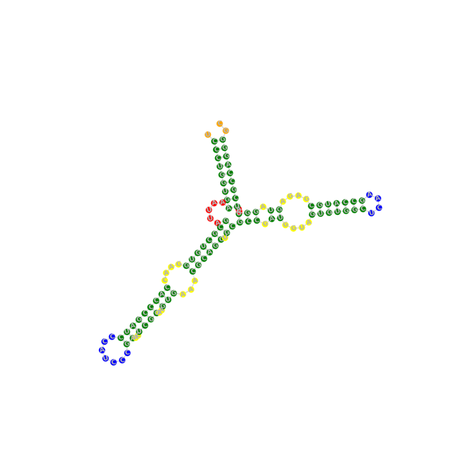

RNA Structure Tasks Performance
Keypoints : RNA sequences determine structures. This panel outlines tasks for inferring RNA structure from one-dimensional (1D) sequence, including (1) secondary structure prediction for base-pairing likelihood, (2) chemical reactivity prediction for structural dynamics and nucleotide accessibility, and (3) contact map prediction for spatial interactions essential to three-dimensional topology. Together, these tasks establish a sub-framework for understanding the structural diversity of RNA across families. Results are reported as the mean ± standard deviation across three independent runs using different random seeds.
(1) Secondary Structure Prediction 
Secondary Structure Prediction (SSP) is formulated as a binary-classification problem in which the model
predicts the pairing state \(y_i \in \{0,1\}\) of each nucleotide \(x_i\) in an RNA sequence, thereby capturing its
base-pairing pattern. The benchmark comprises three independent datasets—bpRNA,SetA, and SetB—each split into
two evaluation subsets: an intra-family split (training and test sequences drawn from the same RNA family) and an
inter-family split (training and test sequences drawn from different RNA families).
| Model (Module) | bpRNA | Set A | Set B | |||||||||||||||
|---|---|---|---|---|---|---|---|---|---|---|---|---|---|---|---|---|---|---|
| PrecisionIntra-Family | RecallIntra-Family | F1Intra-Family | PrecisionInter-Family | RecallInter-Family | F1Inter-Family | PrecisionIntra-Family | RecallIntra-Family | F1Intra-Family | PrecisionInter-Family | RecallInter-Family | F1Inter-Family | PrecisionIntra-Family | RecallIntra-Family | F1Intra-Family | PrecisionInter-Family | RecallInter-Family | F1Inter-Family | |
| One-hot | 0.465 ± 0.008 | 0.668 ± 0.021 | 0.548 ± 0.003 | 0.399 ± 0.002 | 0.608 ± 0.022 | 0.482 ± 0.006 | 0.630 ± 0.023 | 0.763 ± 0.050 | 0.689 ± 0.007 | 0.278 ± 0.010 | 0.455 ± 0.073 | 0.343 ± 0.014 | 0.438 ± 0.022 | 0.320 ± 0.021 | 0.369 ± 0.008 | 0.605 ± 0.008 | 0.442 ± 0.035 | 0.510 ± 0.021 |
| Dense | 0.433 ± 0.015 | 0.763 ± 0.039 | 0.552 ± 0.002 | 0.387 ± 0.006 | 0.712 ± 0.047 | 0.501 ± 0.007 | 0.628 ± 0.013 | 0.777 ± 0.029 | 0.695 ± 0.005 | 0.277 ± 0.006 | 0.472 ± 0.047 | 0.348 ± 0.010 | 0.435 ± 0.027 | 0.346 ± 0.022 | 0.384 ± 0.006 | 0.600 ± 0.007 | 0.469 ± 0.044 | 0.526 ± 0.027 |
| RNABERT (MLP) | 0.551 ± 0.003 | 0.551 ± 0.007 | 0.551 ± 0.004 | 0.517 ± 0.000 | 0.567 ± 0.007 | 0.541 ± 0.003 | 0.614 ± 0.000 | 0.814 ± 0.002 | 0.700 ± 0.001 | 0.488 ± 0.000 | 0.803 ± 0.000 | 0.607 ± 0.000 | 0.525 ± 0.001 | 0.512 ± 0.004 | 0.518 ± 0.002 | 0.649 ± 0.001 | 0.440 ± 0.005 | 0.524 ± 0.004 |
| RNA-FM (MLP) | 0.747 ± 0.001 | 0.788 ± 0.007 | 0.766 ± 0.004 | 0.563 ± 0.003 | 0.661 ± 0.008 | 0.608 ± 0.002 | 0.810 ± 0.002 | 0.867 ± 0.004 | 0.837 ± 0.001 | 0.657 ± 0.009 | 0.716 ± 0.009 | 0.685 ± 0.001 | 0.867 ± 0.002 | 0.871 ± 0.002 | 0.869 ± 0.000 | 0.699 ± 0.005 | 0.533 ± 0.011 | 0.605 ± 0.006 |
| 3UTRBERT (MLP) | 0.600 ± 0.008 | 0.702 ± 0.022 | 0.647 ± 0.012 | 0.529 ± 0.006 | 0.686 ± 0.017 | 0.597 ± 0.003 | 0.683 ± 0.009 | 0.822 ± 0.006 | 0.746 ± 0.004 | 0.500 ± 0.002 | 0.743 ± 0.016 | 0.598 ± 0.004 | 0.670 ± 0.005 | 0.676 ± 0.014 | 0.673 ± 0.005 | 0.616 ± 0.003 | 0.483 ± 0.014 | 0.512 ± 0.009 |
| SpliceRBERT (MLP) | 0.613 ± 0.018 | 0.696 ± 0.040 | 0.651 ± 0.024 | 0.533 ± 0.007 | 0.652 ± 0.034 | 0.586 ± 0.011 | 0.708 ± 0.019 | 0.822 ± 0.023 | 0.760 ± 0.001 | 0.496 ± 0.005 | 0.718 ± 0.039 | 0.587 ± 0.010 | 0.723 ± 0.010 | 0.712 ± 0.018 | 0.717 ± 0.005 | 0.615 ± 0.003 | 0.495 ± 0.036 | 0.548 ± 0.022 |
| UTR-LM (MLP) | 0.599 ± 0.014 | 0.646 ± 0.015 | 0.621 ± 0.007 | 0.543 ± 0.004 | 0.634 ± 0.018 | 0.585 ± 0.005 | 0.671 ± 0.007 | 0.785 ± 0.010 | 0.723 ± 0.005 | 0.505 ± 0.002 | 0.729 ± 0.014 | 0.597 ± 0.005 | 0.639 ± 0.014 | 0.669 ± 0.034 | 0.653 ± 0.016 | 0.626 ± 0.007 | 0.499 ± 0.030 | 0.555 ± 0.017 |
| RiNALMo (MLP) | 0.781 ± 0.006 | 0.814 ± 0.009 | 0.797 ± 0.004 | 0.575 ± 0.007 | 0.683 ± 0.016 | 0.625 ± 0.006 | 0.871 ± 0.004 | 0.892 ± 0.007 | 0.881 ± 0.002 | 0.675 ± 0.008 | 0.756 ± 0.010 | 0.713 ± 0.003 | 0.887 ± 0.011 | 0.901 ± 0.007 | 0.894 ± 0.003 | 0.789 ± 0.004 | 0.673 ± 0.013 | 0.726 ± 0.006 |
| RNABERT (CNN) | 0.587 ± 0.004 | 0.610 ± 0.011 | 0.598 ± 0.003 | 0.542 ± 0.002 | 0.603 ± 0.013 | 0.571 ± 0.005 | 0.652 ± 0.010 | 0.746 ± 0.018 | 0.696 ± 0.003 | 0.507 ± 0.004 | 0.730 ± 0.031 | 0.599 ± 0.010 | 0.548 ± 0.005 | 0.606 ± 0.023 | 0.575 ± 0.008 | 0.588 ± 0.002 | 0.537 ± 0.028 | 0.561 ± 0.015 |
| RNA-FM (CNN) | 0.763 ± 0.009 | 0.812 ± 0.012 | 0.786 ± 0.001 | 0.541 ± 0.007 | 0.650 ± 0.015 | 0.590 ± 0.005 | 0.813 ± 0.006 | 0.847 ± 0.009 | 0.842 ± 0.001 | 0.649 ± 0.020 | 0.727 ± 0.016 | 0.685 ± 0.005 | 0.879 ± 0.015 | 0.870 ± 0.014 | 0.874 ± 0.001 | 0.682 ± 0.012 | 0.489 ± 0.017 | 0.569 ± 0.007 |
| 3UTRBERT (CNN) | 0.612 ± 0.015 | 0.748 ± 0.019 | 0.672 ± 0.005 | 0.509 ± 0.011 | 0.697 ± 0.037 | 0.588 ± 0.016 | 0.700 ± 0.001 | 0.837 ± 0.006 | 0.762 ± 0.002 | 0.496 ± 0.005 | 0.733 ± 0.013 | 0.592 ± 0.008 | 0.704 ± 0.002 | 0.704 ± 0.003 | 0.704 ± 0.001 | 0.616 ± 0.003 | 0.401 ± 0.008 | 0.486 ± 0.005 |
| SpliceRBERT (CNN) | 0.634 ± 0.003 | 0.760 ± 0.011 | 0.691 ± 0.003 | 0.496 ± 0.005 | 0.656 ± 0.013 | 0.565 ± 0.004 | 0.727 ± 0.007 | 0.829 ± 0.009 | 0.774 ± 0.000 | 0.492 ± 0.003 | 0.703 ± 0.013 | 0.579 ± 0.006 | 0.730 ± 0.004 | 0.744 ± 0.020 | 0.737 ± 0.008 | 0.614 ± 0.004 | 0.441 ± 0.015 | 0.513 ± 0.011 |
| UTR-LM (CNN) | 0.618 ± 0.006 | 0.728 ± 0.012 | 0.668 ± 0.003 | 0.524 ± 0.007 | 0.688 ± 0.019 | 0.595 ± 0.007 | 0.689 ± 0.005 | 0.807 ± 0.012 | 0.743 ± 0.003 | 0.498 ± 0.002 | 0.716 ± 0.012 | 0.587 ± 0.003 | 0.709 ± 0.008 | 0.668 ± 0.005 | 0.688 ± 0.006 | 0.620 ± 0.003 | 0.400 ± 0.003 | 0.486 ± 0.003 |
| RiNALMo (CNN) | 0.785 ± 0.006 | 0.823 ± 0.007 | 0.803 ± 0.000 | 0.572 ± 0.014 | 0.643 ± 0.025 | 0.605 ± 0.006 | 0.874 ± 0.002 | 0.888 ± 0.007 | 0.881 ± 0.002 | 0.678 ± 0.003 | 0.783 ± 0.020 | 0.706 ± 0.007 | 0.908 ± 0.005 | 0.897 ± 0.002 | 0.903 ± 0.002 | 0.779 ± 0.010 | 0.650 ± 0.018 | 0.708 ± 0.008 |
| RNABERT (ResNet) | 0.593 ± 0.026 | 0.818 ± 0.058 | 0.685 ± 0.003 | 0.479 ± 0.011 | 0.730 ± 0.077 | 0.576 ± 0.015 | 0.690 ± 0.014 | 0.805 ± 0.032 | 0.743 ± 0.006 | 0.484 ± 0.004 | 0.723 ± 0.039 | 0.579 ± 0.009 | 0.705 ± 0.005 | 0.639 ± 0.009 | 0.670 ± 0.004 | 0.610 ± 0.007 | 0.393 ± 0.021 | 0.478 ± 0.013 |
| RNA-FM (ResNet) | 0.734 ± 0.008 | 0.820 ± 0.012 | 0.775 ± 0.001 | 0.540 ± 0.009 | 0.693 ± 0.016 | 0.607 ± 0.001 | 0.783 ± 0.006 | 0.861 ± 0.006 | 0.820 ± 0.001 | 0.585 ± 0.015 | 0.766 ± 0.005 | 0.663 ± 0.008 | 0.851 ± 0.017 | 0.870 ± 0.004 | 0.860 ± 0.006 | 0.665 ± 0.015 | 0.533 ± 0.045 | 0.591 ± 0.023 |
| 3UTRBERT (ResNet) | 0.597 ± 0.010 | 0.804 ± 0.036 | 0.685 ± 0.007 | 0.485 ± 0.004 | 0.713 ± 0.051 | 0.576 ± 0.015 | 0.699 ± 0.009 | 0.801 ± 0.018 | 0.746 ± 0.003 | 0.489 ± 0.006 | 0.692 ± 0.029 | 0.573 ± 0.008 | 0.706 ± 0.022 | 0.686 ± 0.034 | 0.695 ± 0.009 | 0.609 ± 0.004 | 0.422 ± 0.049 | 0.498 ± 0.032 |
| SpliceRBERT (ResNet) | 0.627 ± 0.012 | 0.781 ± 0.033 | 0.695 ± 0.006 | 0.491 ± 0.008 | 0.692 ± 0.031 | 0.574 ± 0.005 | 0.718 ± 0.020 | 0.835 ± 0.035 | 0.772 ± 0.004 | 0.486 ± 0.006 | 0.719 ± 0.056 | 0.579 ± 0.014 | 0.719 ± 0.017 | 0.706 ± 0.015 | 0.712 ± 0.003 | 0.599 ± 0.013 | 0.528 ± 0.006 | 0.561 ± 0.003 |
| UTR-LM (ResNet) | 0.625 ± 0.012 | 0.488 ± 0.028 | 0.697 ± 0.003 | 0.491 ± 0.006 | 0.676 ± 0.042 | 0.568 ± 0.012 | 0.720 ± 0.012 | 0.797 ± 0.033 | 0.756 ± 0.008 | 0.491 ± 0.005 | 0.678 ± 0.047 | 0.569 ± 0.013 | 0.738 ± 0.028 | 0.698 ± 0.043 | 0.716 ± 0.012 | 0.613 ± 0.008 | 0.387 ± 0.058 | 0.472 ± 0.042 |
| RiNALMo (ResNet) | 0.788 ± 0.014 | 0.823 ± 0.010 | 0.805 ± 0.003 | 0.573 ± 0.007 | 0.660 ± 0.036 | 0.613 ± 0.014 | 0.861 ± 0.005 | 0.903 ± 0.009 | 0.882 ± 0.002 | 0.664 ± 0.022 | 0.757 ± 0.044 | 0.707 ± 0.007 | 0.902 ± 0.015 | 0.891 ± 0.016 | 0.897 ± 0.001 | 0.773 ± 0.022 | 0.596 ± 0.035 | 0.672 ± 0.015 |
(2) Chemical Reactivity Prediction
Chemical Reactivity Prediction (CRP) is framed as a
regression task in which the model estimates the nucleotide-wise chemical
reactivity \(y_i \in [0,1]\) for each position
\(x_i\) of an RNA molecule. Reactivity values correlate with secondary
structure: unpaired or flexible regions generally exhibit higher chemical
reactivity, whereas base-paired segments tend to be less reactive.
Accordingly, CRP captures both static base-pairing information and dynamic
conformational fluctuations The benchmark provides two Test sets—
TestS (short RNAs) and
TestL (long RNAs)—whose
ground-truth reactivities were obtained from high-throughput probing
experiments. Models are assessed by the mean absolute error
(MAE ↓) on each test set.
| Model (Module) | TestS | TestL |
|---|---|---|
| MAE ↓ | MAE ↓ | |
| One-hot | 0.179 ± 0.001 | 0.167 ± 0.002 |
| Dense | 0.176 ± 0.001 | 0.174 ± 0.002 |
| RNABERT (MLP) | 0.255 ± 0.000 | 0.266 ± 0.001 |
| RNA-FM (MLP) | 0.214 ± 0.001 | 0.187 ± 0.003 |
| 3UTRBERT (MLP) | 0.202 ± 0.001 | 0.195 ± 0.002 |
| SpliceBERT (MLP) | 0.207 ± 0.001 | 0.207 ± 0.001 |
| UTR-LM (MLP) | 0.201 ± 0.001 | 0.196 ± 0.003 |
| RiNALMo (MLP) | 0.183 ± 0.001 | 0.195 ± 0.002 |
| RNABERT (CNN) | 0.228 ± 0.001 | 0.241 ± 0.002 |
| RNA-FM (CNN) | 0.197 ± 0.003 | 0.176 ± 0.001 |
| 3UTRBERT (CNN) | 0.192 ± 0.000 | 0.182 ± 0.002 |
| SpliceBERT (CNN) | 0.196 ± 0.001 | 0.179 ± 0.002 |
| UTR-LM (CNN) | 0.191 ± 0.001 | 0.176 ± 0.007 |
| RiNALMo (CNN) | 0.173 ± 0.001 | 0.179 ± 0.002 |
| RNABERT (ResNet) | 0.181 ± 0.002 | 0.175 ± 0.003 |
| RNA-FM (ResNet) | 0.196 ± 0.004 | 0.166 ± 0.004 |
| 3UTRBERT (ResNet) | 0.187 ± 0.002 | 0.172 ± 0.004 |
| SpliceBERT (ResNet) | 0.193 ± 0.004 | 0.177 ± 0.003 |
| UTR-LM (ResNet) | 0.180 ± 0.001 | 0.171 ± 0.005 |
| RiNALMo (ResNet) | 0.163 ± 0.000 | 0.163 ± 0.004 |
(3) Contact Map Prediction 
Contact Map Prediction (CMP) is framed as a binary-classification task in which the model predicts, for every nucleotide pair \((x_i, x_j)\), whether the two residues are within 8 Å in three-dimensional space, i.e. their contact state \(y_{ij} \in \{0,1\}\). Owing to the intrinsic flexibility of RNA, accurately recovering these long-range spatial relationships remains highly challenging.
| Model (Module) | Short@L/5 | Long@L/5 |
|---|---|---|
| One-hot | 0.158 ± 0.006 | 0.168 ± 0.007 |
| Dense | 0.190 ± 0.015 | 0.170 ± 0.006 |
| RNABERT (MLP) | 0.013 ± 0.001 | 0.021 ± 0.003 |
| RNA-FM (MLP) | 0.137 ± 0.003 | 0.129 ± 0.002 |
| 3UTRBERT (MLP) | 0.103 ± 0.002 | 0.086 ± 0.003 |
| SpliceBERT (MLP) | 0.111 ± 0.002 | 0.121 ± 0.002 |
| UTR-LM (MLP) | 0.111 ± 0.002 | 0.097 ± 0.002 |
| RiNALMo (MLP) | 0.173 ± 0.001 | 0.164 ± 0.002 |
| RNABERT (CNN) | 0.117 ± 0.005 | 0.102 ± 0.002 |
| RNA-FM (CNN) | 0.141 ± 0.005 | 0.150 ± 0.004 |
| 3UTRBERT (CNN) | 0.138 ± 0.004 | 0.109 ± 0.005 |
| SpliceBERT (CNN) | 0.150 ± 0.007 | 0.140 ± 0.004 |
| UTR-LM (CNN) | 0.152 ± 0.005 | 0.132 ± 0.001 |
| RiNALMo (CNN) | 0.182 ± 0.002 | 0.146 ± 0.003 |
| RNABERT (ResNet) | 0.084 ± 0.003 | 0.083 ± 0.003 |
| RNA-FM (ResNet) | 0.145 ± 0.008 | 0.150 ± 0.007 |
| 3UTRBERT (ResNet) | 0.137 ± 0.016 | 0.122 ± 0.002 |
| SpliceBERT (ResNet) | 0.155 ± 0.002 | 0.131 ± 0.009 |
| UTR-LM (ResNet) | 0.075 ± 0.006 | 0.101 ± 0.002 |
| RiNALMo (ResNet) | 0.133 ± 0.002 | 0.139 ± 0.005 |
RNA Interaction Tasks Performance
Keypoints : Both naturally and artificially evolved RNA sequences adopt defined structural shapes, enabling high-specificity interactions with a wide array of target molecules. This panel outlines tasks for inferring RNA interaction with different targets from 1D sequence, including (1) binary binding prediction for RNA–protein interactions within cells; (2) systematic binding ranking for categorizing RNA interaction with targets of varying molecular sizes; and (3) binding affinity prediction for RNA–protein interaction with varying strengths in vitro. Together, these tasks establish a sub-framework for understanding the interaction diversity of RNA across targets, encompassing both persistent and transient interaction. As before, results are reported as the mean ± standard deviation across three independent runs with different random seeds.
(1) Binary Binary Prediction
Binary Binding Prediction (BBP) defines a binary-classification task in which the model predicts whether an RNA sequence interacts with a specific RNA-binding protein (RBP). The benchmark comprises 22 independent datasets—one for each RBP profiled in K562 and HepG2 cell lines. To eliminate redundancy, any sequences sharing over 80% identity are removed.
| Model (Module) | Average of 22 RBPs datasets | AKAP1_HepG2 | BCLAF1_HepG2 | DDX24_K562 | DDX3X_HepG2 | DDX3X_K562 | FAM120A_K562 | G3BP1_HepG2 | GRWD1_HepG2 | IGF2BP1_K562 | LARP4_HepG2 | LIN28B_K562 | PABPC4_K562 | PPIG_HepG2 | PUM2_K562 | RBM15_K562 | RPS3_HepG2 | SND1_HepG2 | UPF1_HepG2 | UPF1_K562 | UCHL5_K562 | YBX3_K562 | YBX3_K562 |
|---|---|---|---|---|---|---|---|---|---|---|---|---|---|---|---|---|---|---|---|---|---|---|---|
| F1 | F1 | F1 | F1 | F1 | F1 | F1 | F1 | F1 | F1 | F1 | F1 | F1 | F1 | F1 | F1 | F1 | F1 | F1 | F1 | F1 | F1 | ||
| One-hot | 0.703 | 0.753 ± 0.007 | 0.733 ± 0.009 | 0.638 ± 0.005 | 0.850 ± 0.001 | 0.808 ± 0.002 | 0.731 ± 0.006 | 0.608 ± 0.016 | 0.654 ± 0.007 | 0.698 ± 0.001 | 0.650 ± 0.003 | 0.603 ± 0.006 | 0.682 ± 0.004 | 0.694 ± 0.012 | 0.899 ± 0.002 | 0.646 ± 0.004 | 0.675 ± 0.006 | 0.670 ± 0.005 | 0.765 ± 0.004 | 0.717 ± 0.003 | 0.685 ± 0.003 | 0.634 ± 0.002 | 0.679 ± 0.005 |
| Dense | 0.704 | 0.757 ± 0.002 | 0.743 ± 0.008 | 0.651 ± 0.009 | 0.847 ± 0.001 | 0.808 ± 0.002 | 0.736 ± 0.004 | 0.623 ± 0.006 | 0.657 ± 0.002 | 0.695 ± 0.004 | 0.656 ± 0.008 | 0.593 ± 0.008 | 0.679 ± 0.003 | 0.698 ± 0.005 | 0.901 ± 0.003 | 0.651 ± 0.006 | 0.678 ± 0.006 | 0.657 ± 0.007 | 0.768 ± 0.001 | 0.721 ± 0.003 | 0.679 ± 0.012 | 0.626 ± 0.005 | 0.673 ± 0.001 |
| DNABERT2 (MLP) | 0.683 | 0.745 ± 0.005 | 0.697 ± 0.001 | 0.599 ± 0.010 | 0.846 ± 0.001 | 0.807 ± 0.004 | 0.717 ± 0.014 | 0.584 ± 0.007 | 0.621 ± 0.003 | 0.691 ± 0.002 | 0.645 ± 0.008 | 0.584 ± 0.007 | 0.655 ± 0.003 | 0.669 ± 0.003 | 0.820 ± 0.003 | 0.658 ± 0.006 | 0.681 ± 0.006 | 0.629 ± 0.007 | 0.755 ± 0.003 | 0.711 ± 0.002 | 0.668 ± 0.001 | 0.591 ± 0.002 | 0.657 ± 0.005 |
| HyenaDNA (MLP) | 0.640 | 0.722 ± 0.007 | 0.674 ± 0.005 | 0.536 ± 0.026 | 0.846 ± 0.002 | 0.793 ± 0.007 | 0.678 ± 0.018 | 0.527 ± 0.020 | 0.532 ± 0.013 | 0.695 ± 0.002 | 0.580 ± 0.037 | 0.412 ± 0.008 | 0.579 ± 0.019 | 0.659 ± 0.002 | 0.794 ± 0.005 | 0.631 ± 0.008 | 0.665 ± 0.003 | 0.609 ± 0.014 | 0.732 ± 0.003 | 0.684 ± 0.013 | 0.608 ± 0.004 | 0.509 ± 0.023 | 0.607 ± 0.007 |
| NT (MLP) | 0.666 | 0.744 ± 0.002 | 0.676 ± 0.006 | 0.572 ± 0.008 | 0.840 ± 0.006 | 0.796 ± 0.001 | 0.700 ± 0.003 | 0.586 ± 0.001 | 0.593 ± 0.001 | 0.680 ± 0.006 | 0.641 ± 0.009 | 0.467 ± 0.053 | 0.647 ± 0.003 | 0.649 ± 0.011 | 0.814 ± 0.002 | 0.638 ± 0.004 | 0.663 ± 0.003 | 0.599 ± 0.019 | 0.743 ± 0.001 | 0.688 ± 0.008 | 0.642 ± 0.002 | 0.635 ± 0.001 | 0.635 ± 0.001 |
| RNABERT (MLP) | 0.539 | 0.548 ± 0.009 | 0.617 ± 0.007 | 0.456 ± 0.012 | 0.798 ± 0.003 | 0.689 ± 0.007 | 0.501 ± 0.021 | 0.436 ± 0.004 | 0.457 ± 0.012 | 0.615 ± 0.007 | 0.408 ± 0.000 | 0.406 ± 0.000 | 0.407 ± 0.000 | 0.567 ± 0.007 | 0.726 ± 0.001 | 0.550 ± 0.011 | 0.605 ± 0.008 | 0.522 ± 0.004 | 0.601 ± 0.014 | 0.480 ± 0.017 | 0.538 ± 0.008 | 0.415 ± 0.000 | 0.519 ± 0.004 |
| RNA-FM (MLP) | 0.698 | 0.776 ± 0.000 | 0.715 ± 0.001 | 0.628 ± 0.002 | 0.852 ± 0.001 | 0.811 ± 0.004 | 0.751 ± 0.003 | 0.638 ± 0.001 | 0.638 ± 0.008 | 0.734 ± 0.006 | 0.507 ± 0.009 | 0.602 ± 0.015 | 0.696 ± 0.001 | 0.684 ± 0.003 | 0.819 ± 0.004 | 0.674 ± 0.002 | 0.698 ± 0.002 | 0.669 ± 0.002 | 0.779 ± 0.003 | 0.740 ± 0.003 | 0.679 ± 0.002 | 0.590 ± 0.018 | 0.672 ± 0.005 |
| 3UTRBERT (MLP) | 0.716 | 0.788 ± 0.002 | 0.720 ± 0.002 | 0.641 ± 0.003 | 0.854 ± 0.001 | 0.826 ± 0.002 | 0.755 ± 0.001 | 0.661 ± 0.003 | 0.650 ± 0.002 | 0.722 ± 0.002 | 0.696 ± 0.001 | 0.609 ± 0.002 | 0.695 ± 0.005 | 0.707 ± 0.002 | 0.853 ± 0.003 | 0.681 ± 0.003 | 0.685 ± 0.001 | 0.662 ± 0.003 | 0.783 ± 0.002 | 0.746 ± 0.003 | 0.702 ± 0.006 | 0.606 ± 0.004 | 0.690 ± 0.003 |
| SpliceBERT (MLP) | 0.736 | 0.789 ± 0.003 | 0.742 ± 0.002 | 0.697 ± 0.003 | 0.863 ± 0.001 | 0.838 ± 0.001 | 0.747 ± 0.004 | 0.689 ± 0.001 | 0.692 ± 0.004 | 0.743 ± 0.001 | 0.709 ± 0.004 | 0.649 ± 0.001 | 0.724 ± 0.003 | 0.746 ± 0.006 | 0.842 ± 0.004 | 0.679 ± 0.001 | 0.708 ± 0.005 | 0.687 ± 0.003 | 0.787 ± 0.003 | 0.744 ± 0.003 | 0.742 ± 0.002 | 0.652 ± 0.002 | 0.727 ± 0.001 |
| UTR-LM (MLP) | 0.682 | 0.760 ± 0.003 | 0.696 ± 0.007 | 0.595 ± 0.009 | 0.850 ± 0.002 | 0.813 ± 0.002 | 0.735 ± 0.003 | 0.590 ± 0.009 | 0.596 ± 0.030 | 0.701 ± 0.003 | 0.662 ± 0.002 | 0.555 ± 0.055 | 0.667 ± 0.007 | 0.673 ± 0.003 | 0.815 ± 0.003 | 0.645 ± 0.007 | 0.671 ± 0.006 | 0.625 ± 0.018 | 0.654 ± 0.004 | 0.766 ± 0.002 | 0.722 ± 0.003 | 0.572 ± 0.001 | 0.650 ± 0.007 |
| RiNALMo (MLP) | 0.726 | 0.797 ± 0.003 | 0.740 ± 0.003 | 0.664 ± 0.008 | 0.861 ± 0.001 | 0.824 ± 0.004 | 0.768 ± 0.002 | 0.663 ± 0.007 | 0.665 ± 0.004 | 0.742 ± 0.001 | 0.690 ± 0.003 | 0.633 ± 0.004 | 0.709 ± 0.004 | 0.715 ± 0.003 | 0.843 ± 0.001 | 0.689 ± 0.002 | 0.704 ± 0.012 | 0.668 ± 0.007 | 0.715 ± 0.002 | 0.790 ± 0.002 | 0.755 ± 0.005 | 0.621 ± 0.002 | 0.714 ± 0.007 |
| DNABERT2 (CNN) | 0.685 | 0.739 ± 0.005 | 0.697 ± 0.001 | 0.599 ± 0.010 | 0.845 ± 0.004 | 0.799 ± 0.003 | 0.724 ± 0.002 | 0.602 ± 0.006 | 0.614 ± 0.008 | 0.694 ± 0.002 | 0.638 ± 0.010 | 0.589 ± 0.004 | 0.670 ± 0.010 | 0.656 ± 0.007 | 0.843 ± 0.006 | 0.657 ± 0.004 | 0.677 ± 0.005 | 0.652 ± 0.004 | 0.750 ± 0.009 | 0.702 ± 0.007 | 0.651 ± 0.002 | 0.618 ± 0.002 | 0.644 ± 0.006 |
| HyenaDNA (CNN) | 0.697 | 0.760 ± 0.002 | 0.733 ± 0.007 | 0.614 ± 0.023 | 0.851 ± 0.006 | 0.813 ± 0.000 | 0.755 ± 0.007 | 0.613 ± 0.002 | 0.626 ± 0.011 | 0.738 ± 0.004 | 0.643 ± 0.006 | 0.406 ± 0.000 | 0.670 ± 0.009 | 0.730 ± 0.003 | 0.883 ± 0.005 | 0.704 ± 0.005 | 0.702 ± 0.008 | 0.669 ± 0.010 | 0.767 ± 0.002 | 0.716 ± 0.004 | 0.657 ± 0.007 | 0.605 ± 0.018 | 0.684 ± 0.007 |
| NT (CNN) | 0.674 | 0.742 ± 0.008 | 0.689 ± 0.002 | 0.598 ± 0.005 | 0.842 ± 0.004 | 0.796 ± 0.003 | 0.712 ± 0.005 | 0.593 ± 0.007 | 0.608 ± 0.004 | 0.685 ± 0.005 | 0.637 ± 0.003 | 0.453 ± 0.067 | 0.641 ± 0.006 | 0.668 ± 0.002 | 0.835 ± 0.006 | 0.658 ± 0.003 | 0.670 ± 0.014 | 0.625 ± 0.007 | 0.752 ± 0.001 | 0.695 ± 0.007 | 0.647 ± 0.002 | 0.646 ± 0.002 | 0.646 ± 0.002 |
| RNABERT (CNN) | 0.642 | 0.704 ± 0.002 | 0.670 ± 0.002 | 0.527 ± 0.002 | 0.835 ± 0.002 | 0.792 ± 0.002 | 0.685 ± 0.004 | 0.515 ± 0.004 | 0.584 ± 0.006 | 0.679 ± 0.003 | 0.598 ± 0.006 | 0.507 ± 0.009 | 0.631 ± 0.010 | 0.607 ± 0.014 | 0.815 ± 0.002 | 0.615 ± 0.004 | 0.642 ± 0.007 | 0.567 ± 0.005 | 0.724 ± 0.002 | 0.684 ± 0.002 | 0.606 ± 0.001 | 0.535 ± 0.008 | 0.613 ± 0.003 |
| RNA-FM (CNN) | 0.724 | 0.788 ± 0.002 | 0.740 ± 0.002 | 0.658 ± 0.001 | 0.859 ± 0.003 | 0.812 ± 0.001 | 0.761 ± 0.007 | 0.654 ± 0.003 | 0.662 ± 0.001 | 0.743 ± 0.002 | 0.662 ± 0.001 | 0.619 ± 0.003 | 0.702 ± 0.002 | 0.722 ± 0.003 | 0.875 ± 0.006 | 0.707 ± 0.004 | 0.709 ± 0.002 | 0.689 ± 0.006 | 0.788 ± 0.002 | 0.755 ± 0.002 | 0.693 ± 0.005 | 0.642 ± 0.001 | 0.697 ± 0.002 |
| 3UTRBERT (CNN) | 0.728 | 0.789 ± 0.002 | 0.755 ± 0.002 | 0.666 ± 0.003 | 0.853 ± 0.006 | 0.826 ± 0.002 | 0.763 ± 0.002 | 0.663 ± 0.010 | 0.675 ± 0.006 | 0.727 ± 0.002 | 0.701 ± 0.000 | 0.628 ± 0.008 | 0.708 ± 0.011 | 0.734 ± 0.000 | 0.890 ± 0.004 | 0.688 ± 0.007 | 0.698 ± 0.007 | 0.678 ± 0.006 | 0.791 ± 0.001 | 0.752 ± 0.001 | 0.718 ± 0.004 | 0.639 ± 0.008 | 0.711 ± 0.004 |
| SpliceBERT (CNN) | 0.748 | 0.792 ± 0.002 | 0.770 ± 0.000 | 0.712 ± 0.004 | 0.860 ± 0.000 | 0.838 ± 0.003 | 0.759 ± 0.004 | 0.694 ± 0.004 | 0.710 ± 0.003 | 0.746 ± 0.001 | 0.716 ± 0.001 | 0.642 ± 0.010 | 0.729 ± 0.000 | 0.769 ± 0.004 | 0.872 ± 0.006 | 0.708 ± 0.002 | 0.717 ± 0.003 | 0.713 ± 0.002 | 0.789 ± 0.002 | 0.759 ± 0.003 | 0.748 ± 0.001 | 0.676 ± 0.002 | 0.743 ± 0.006 |
| UTR-LM (CNN) | 0.728 | 0.791 ± 0.004 | 0.751 ± 0.001 | 0.666 ± 0.012 | 0.853 ± 0.002 | 0.815 ± 0.003 | 0.759 ± 0.003 | 0.657 ± 0.003 | 0.680 ± 0.008 | 0.740 ± 0.007 | 0.681 ± 0.006 | 0.631 ± 0.001 | 0.690 ± 0.037 | 0.744 ± 0.004 | 0.887 ± 0.005 | 0.704 ± 0.011 | 0.698 ± 0.006 | 0.671 ± 0.004 | 0.709 ± 0.002 | 0.785 ± 0.003 | 0.749 ± 0.002 | 0.645 ± 0.006 | 0.716 ± 0.004 |
| RiNALMo (CNN) | 0.749 | 0.800 ± 0.004 | 0.776 ± 0.002 | 0.720 ± 0.005 | 0.865 ± 0.002 | 0.820 ± 0.006 | 0.778 ± 0.003 | 0.681 ± 0.007 | 0.703 ± 0.002 | 0.751 ± 0.004 | 0.702 ± 0.002 | 0.643 ± 0.006 | 0.720 ± 0.005 | 0.764 ± 0.001 | 0.895 ± 0.005 | 0.729 ± 0.003 | 0.722 ± 0.005 | 0.701 ± 0.002 | 0.740 ± 0.006 | 0.793 ± 0.001 | 0.769 ± 0.002 | 0.666 ± 0.003 | 0.748 ± 0.004 |
| DNABERT2 (ResNet) | 0.669 | 0.726 ± 0.008 | 0.697 ± 0.007 | 0.577 ± 0.001 | 0.843 ± 0.001 | 0.795 ± 0.001 | 0.701 ± 0.021 | 0.572 ± 0.005 | 0.599 ± 0.006 | 0.678 ± 0.008 | 0.639 ± 0.019 | 0.561 ± 0.008 | 0.628 ± 0.004 | 0.659 ± 0.002 | 0.823 ± 0.009 | 0.653 ± 0.005 | 0.664 ± 0.009 | 0.620 ± 0.004 | 0.749 ± 0.004 | 0.684 ± 0.007 | 0.626 ± 0.009 | 0.594 ± 0.005 | 0.634 ± 0.012 |
| HyenaDNA (ResNet) | 0.727 | 0.771 ± 0.003 | 0.753 ± 0.001 | 0.683 ± 0.004 | 0.853 ± 0.001 | 0.810 ± 0.001 | 0.757 ± 0.007 | 0.633 ± 0.005 | 0.679 ± 0.005 | 0.732 ± 0.004 | 0.658 ± 0.004 | 0.607 ± 0.009 | 0.686 ± 0.003 | 0.739 ± 0.005 | 0.896 ± 0.004 | 0.720 ± 0.004 | 0.699 ± 0.004 | 0.684 ± 0.007 | 0.778 ± 0.003 | 0.737 ± 0.003 | 0.704 ± 0.001 | 0.639 ± 0.002 | 0.710 ± 0.008 |
| NT (ResNet) | 0.681 | 0.738 ± 0.006 | 0.708 ± 0.003 | 0.601 ± 0.014 | 0.841 ± 0.003 | 0.790 ± 0.016 | 0.701 ± 0.007 | 0.601 ± 0.008 | 0.623 ± 0.003 | 0.688 ± 0.015 | 0.624 ± 0.013 | 0.561 ± 0.003 | 0.664 ± 0.002 | 0.672 ± 0.009 | 0.829 ± 0.004 | 0.673 ± 0.012 | 0.678 ± 0.006 | 0.644 ± 0.003 | 0.742 ± 0.003 | 0.700 ± 0.015 | 0.655 ± 0.006 | 0.634 ± 0.002 | 0.634 ± 0.002 |
| RNABERT (ResNet) | 0.675 | 0.732 ± 0.010 | 0.721 ± 0.002 | 0.571 ± 0.016 | 0.838 ± 0.008 | 0.789 ± 0.008 | 0.709 ± 0.010 | 0.559 ± 0.008 | 0.628 ± 0.004 | 0.689 ± 0.003 | 0.624 ± 0.015 | 0.528 ± 0.005 | 0.647 ± 0.021 | 0.684 ± 0.003 | 0.878 ± 0.005 | 0.624 ± 0.009 | 0.657 ± 0.006 | 0.607 ± 0.006 | 0.755 ± 0.005 | 0.708 ± 0.002 | 0.658 ± 0.008 | 0.606 ± 0.005 | 0.643 ± 0.010 |
| RNA-FM (ResNet) | 0.719 | 0.779 ± 0.006 | 0.746 ± 0.001 | 0.644 ± 0.005 | 0.854 ± 0.004 | 0.811 ± 0.004 | 0.752 ± 0.009 | 0.639 ± 0.005 | 0.665 ± 0.008 | 0.732 ± 0.005 | 0.656 ± 0.002 | 0.609 ± 0.012 | 0.686 ± 0.002 | 0.720 ± 0.005 | 0.886 ± 0.005 | 0.706 ± 0.006 | 0.704 ± 0.006 | 0.676 ± 0.005 | 0.780 ± 0.003 | 0.744 ± 0.002 | 0.691 ± 0.004 | 0.631 ± 0.001 | 0.686 ± 0.002 |
| 3UTRBERT (ResNet) | 0.728 | 0.792 ± 0.005 | 0.751 ± 0.001 | 0.660 ± 0.004 | 0.853 ± 0.000 | 0.824 ± 0.002 | 0.748 ± 0.009 | 0.656 ± 0.015 | 0.676 ± 0.005 | 0.721 ± 0.001 | 0.683 ± 0.007 | 0.618 ± 0.004 | 0.694 ± 0.007 | 0.732 ± 0.003 | 0.893 ± 0.004 | 0.693 ± 0.008 | 0.685 ± 0.010 | 0.673 ± 0.014 | 0.791 ± 0.001 | 0.743 ± 0.005 | 0.716 ± 0.003 | 0.637 ± 0.005 | 0.704 ± 0.008 |
| SpliceBERT (ResNet) | 0.750 | 0.785 ± 0.002 | 0.776 ± 0.000 | 0.730 ± 0.004 | 0.863 ± 0.001 | 0.840 ± 0.004 | 0.756 ± 0.009 | 0.691 ± 0.013 | 0.720 ± 0.003 | 0.743 ± 0.003 | 0.710 ± 0.005 | 0.646 ± 0.003 | 0.716 ± 0.005 | 0.789 ± 0.005 | 0.895 ± 0.002 | 0.713 ± 0.002 | 0.710 ± 0.008 | 0.705 ± 0.001 | 0.788 ± 0.002 | 0.745 ± 0.006 | 0.750 ± 0.004 | 0.675 ± 0.007 | 0.749 ± 0.006 |
| UTR-LM (ResNet) | 0.723 | 0.785 ± 0.008 | 0.745 ± 0.009 | 0.659 ± 0.014 | 0.850 ± 0.003 | 0.821 ± 0.007 | 0.752 ± 0.006 | 0.649 ± 0.003 | 0.673 ± 0.013 | 0.730 ± 0.002 | 0.663 ± 0.011 | 0.620 ± 0.003 | 0.689 ± 0.010 | 0.736 ± 0.008 | 0.892 ± 0.005 | 0.693 ± 0.005 | 0.690 ± 0.009 | 0.692 ± 0.007 | 0.699 ± 0.002 | 0.781 ± 0.001 | 0.739 ± 0.002 | 0.639 ± 0.009 | 0.700 ± 0.003 |
| RiNALMo (ResNet) | 0.750 | 0.798 ± 0.004 | 0.781 ± 0.001 | 0.721 ± 0.010 | 0.863 ± 0.006 | 0.823 ± 0.004 | 0.778 ± 0.006 | 0.681 ± 0.002 | 0.711 ± 0.005 | 0.754 ± 0.004 | 0.699 ± 0.007 | 0.641 ± 0.001 | 0.712 ± 0.005 | 0.768 ± 0.006 | 0.893 ± 0.004 | 0.720 ± 0.006 | 0.716 ± 0.006 | 0.707 ± 0.002 | 0.746 ± 0.005 | 0.799 ± 0.004 | 0.766 ± 0.004 | 0.667 ± 0.003 | 0.749 ± 0.009 |
(2) Systematic Binding Ranking
Systematic Binding Ranking (SBR) defines a multi-label classification task in which the model ranks RNA species by their binding preferences across diverse molecular targets. The benchmark comprises three SELEX-derived datasets—DAse, TARDBP, and ISLETS—spanning small molecules, proteins, and (multi)cellular systems.
| Model (Module) | DAse | TARDBP | ISLETS |
|---|---|---|---|
| F1 | F1 | F1 | |
| One-hot | 0.614 ± 0.005 | 0.461 ± 0.010 | 0.415 ± 0.003 |
| Dense | 0.622 ± 0.001 | 0.472 ± 0.003 | 0.412 ± 0.002 |
| DNABERT2 (MLP) | 0.629 ± 0.003 | 0.425 ± 0.005 | 0.403 ± 0.002 |
| HyenaDNA (MLP) | 0.522 ± 0.004 | 0.376 ± 0.003 | 0.317 ± 0.015 |
| NT (MLP) | 0.599 ± 0.010 | 0.391 ± 0.001 | 0.360 ± 0.035 |
| RNABERT (MLP) | 0.528 ± 0.006 | 0.307 ± 0.006 | 0.309 ± 0.007 |
| RNA-FM (MLP) | 0.605 ± 0.006 | 0.396 ± 0.006 | 0.369 ± 0.012 |
| 3UTRBERT (MLP) | 0.611 ± 0.007 | 0.401 ± 0.005 | 0.397 ± 0.005 |
| SpliceBERT (MLP) | 0.620 ± 0.012 | 0.396 ± 0.007 | 0.367 ± 0.012 |
| UTR-LM (MLP) | 0.536 ± 0.015 | 0.366 ± 0.002 | 0.299 ± 0.031 |
| RiNALMo (MLP) | 0.571 ± 0.002 | 0.373 ± 0.004 | 0.332 ± 0.004 |
| DNABERT2 (CNN) | 0.640 ± 0.002 | 0.456 ± 0.001 | 0.414 ± 0.002 |
| HyenaDNA (CNN) | 0.597 ± 0.006 | 0.438 ± 0.004 | 0.390 ± 0.007 |
| NT (CNN) | 0.622 ± 0.012 | 0.448 ± 0.006 | 0.396 ± 0.002 |
| RNABERT (CNN) | 0.538 ± 0.002 | 0.414 ± 0.008 | 0.341 ± 0.007 |
| RNA-FM (CNN) | 0.640 ± 0.016 | 0.460 ± 0.007 | 0.410 ± 0.004 |
| 3UTRBERT (CNN) | 0.642 ± 0.002 | 0.462 ± 0.007 | 0.403 ± 0.003 |
| SpliceBERT (CNN) | 0.639 ± 0.006 | 0.466 ± 0.003 | 0.414 ± 0.003 |
| UTR-LM (CNN) | 0.571 ± 0.019 | 0.432 ± 0.004 | 0.372 ± 0.012 |
| RiNALMo (CNN) | 0.595 ± 0.008 | 0.441 ± 0.003 | 0.370 ± 0.009 |
| DNABERT2 (ResNet) | 0.617 ± 0.009 | 0.438 ± 0.002 | 0.401 ± 0.006 |
| HyenaDNA (ResNet) | 0.623 ± 0.005 | 0.471 ± 0.003 | 0.411 ± 0.005 |
| NT (ResNet) | 0.638 ± 0.013 | 0.454 ± 0.004 | 0.413 ± 0.003 |
| RNABERT (ResNet) | 0.599 ± 0.003 | 0.461 ± 0.003 | 0.404 ± 0.002 |
| RNA-FM (ResNet) | 0.634 ± 0.004 | 0.460 ± 0.008 | 0.409 ± 0.001 |
| 3UTRBERT (ResNet) | 0.624 ± 0.009 | 0.468 ± 0.008 | 0.414 ± 0.002 |
| SpliceBERT (ResNet) | 0.617 ± 0.013 | 0.456 ± 0.002 | 0.406 ± 0.003 |
| UTR-LM (ResNet) | 0.597 ± 0.005 | 0.446 ± 0.004 | 0.372 ± 0.011 |
| RiNALMo (ResNet) | 0.564 ± 0.031 | 0.448 ± 0.004 | 0.381 ± 0.005 |
(3) Binding Affinity Prediction
Binding Affinity Prediction (BAP) is a regression task to quantify the binding strength of RNA sequences and to probe how nucleotide mutations modulate interaction affinity. The benchmark comprises two HiTS-RAP datasets—GFP and NELF—which measure affinities for mutagenized aptamers. Models train on wild-type and single-mutant examples and are evaluated on double mutants to rigorously assess their ability to capture mutational effects on binding.
| Model (Module) | GFP | NELF |
|---|---|---|
| Spearman p | Spearman p | |
| One-hot | 0.215 ± 0.008 | 0.668 ± 0.130 |
| Dense | 0.138 ± 0.041 | 0.388 ± 0.059 |
| DNABERT2 (MLP) | -0.124 ± 0.044 | 0.148 ± 0.010 |
| HyenaDNA (MLP) | 0.092 ± 0.063 | 0.140 ± 0.005 |
| NT (MLP) | 0.139 ± 0.050 | 0.314 ± 0.004 |
| RNABERT (MLP) | -0.049 ± 0.036 | 0.129 ± 0.005 |
| RNA-FM (MLP) | 0.073 ± 0.006 | 0.331 ± 0.009 |
| 3UTRBERT (MLP) | -0.043 ± 0.005 | 0.331 ± 0.009 |
| SpliceBERT (MLP) | 0.079 ± 0.010 | 0.298 ± 0.003 |
| UTR-LM (MLP) | 0.028 ± 0.087 | 0.134 ± 0.072 |
| RiNALMo (MLP) | 0.076 ± 0.070 | 0.157 ± 0.018 |
| DNABERT2 (CNN) | -0.030 ± 0.002 | 0.241 ± 0.021 |
| HyenaDNA (CNN) | 0.139 ± 0.011 | 0.181 ± 0.009 |
| NT (CNN) | 0.138 ± 0.017 | 0.259 ± 0.007 |
| RNABERT (CNN) | -0.016 ± 0.003 | 0.135 ± 0.003 |
| RNA-FM (CNN) | 0.224 ± 0.073 | 0.384 ± 0.002 |
| 3UTRBERT (CNN) | 0.207 ± 0.184 | 0.194 ± 0.008 |
| SpliceBERT (CNN) | 0.107 ± 0.011 | 0.340 ± 0.007 |
| UTR-LM (CNN) | 0.037 ± 0.041 | 0.244 ± 0.069 |
| RiNALMo (CNN) | 0.067 ± 0.061 | 0.161 ± 0.011 |
| DNABERT2 (ResNet) | 0.267 ± 0.014 | 0.580 ± 0.029 |
| HyenaDNA (ResNet) | 0.376 ± 0.032 | 0.625 ± 0.143 |
| NT (ResNet) | 0.334 ± 0.009 | 0.626 ± 0.015 |
| RNABERT (ResNet) | 0.029 ± 0.165 | 0.677 ± 0.052 |
| RNA-FM (ResNet) | 0.407 ± 0.046 | 0.646 ± 0.059 |
| 3UTRBERT (ResNet) | 0.262 ± 0.165 | 0.498 ± 0.213 |
| SpliceBERT (ResNet) | 0.162 ± 0.071 | 0.510 ± 0.040 |
| UTR-LM (ResNet) | 0.233 ± 0.098 | 0.671 ± 0.050 |
| RiNALMo (ResNet) | 0.109 ± 0.093 | 0.256 ± 0.096 |
RNA Function Tasks Performance
Keypoints : Functional RNA demands both conserved structure and specific environment. This panel outlines tasks for inferring RNA functions with different spatiotemporal conditions from 1D sequence across pre-mRNA, mRNA, and ncRNA. Together, these tasks establish a sub-framework for understanding the evolutionary function diversity of RNA across conservation levels and contexts.
Pre-mRNA-related Function Tasks
pre-mRNA-related function tasks include three subtasks:
(1) Splicing Site Prediction (SPS) comprises two binary classification tasks: distinguishing whether a sequence corresponds to a splice donor or acceptor site. SPS is central to pre-mRNA processing, removing non-coding regions and joining coding regions by recognizing donor and acceptor sites.
(2) Splicing Event Prediction (SPE) is a multi-label classification task that maps an RNA sequence x to one of four splicing event labels (ES, AA, AD, IR), revealing the diversity of splicing mechanisms.
(3) Polyadenylation Signal Prediction (PAS) is a binary classification task that predicts the presence of the polyadenylation signal—a hexamer motif upstream of the RNA 3′-end cleavage site—critical for mRNA maturation.
| Model (Module) | Splicing Site | Splicing Event | PAS | |||||||||
|---|---|---|---|---|---|---|---|---|---|---|---|---|
| Donor_human | Donor_ara | Donor_rice | Acceptor_human | Acceptor_ara | Acceptor_rice | human | ara | rice | human | mouse_bl | mouse_sp | |
| Accuracy | Accuracy | Accuracy | Accuracy | Accuracy | Accuracy | F1 | F1 | F1 | Accuracy | Accuracy | Accuracy | |
| One-hot | 0.903 ± 0.001 | 0.893 ± 0.012 | 0.754 ± 0.018 | 0.900 ± 0.002 | 0.746 ± 0.013 | 0.735 ± 0.017 | 0.585 ± 0.004 | 0.310 ± 0.027 | 0.350 ± 0.032 | 0.752 ± 0.003 | 0.633 ± 0.010 | 0.638 ± 0.012 |
| Dense | 0.895 ± 0.002 | 0.762 ± 0.008 | 0.738 ± 0.006 | 0.895 ± 0.001 | 0.738 ± 0.010 | 0.720 ± 0.015 | 0.589 ± 0.016 | 0.330 ± 0.033 | 0.380 ± 0.025 | 0.744 ± 0.001 | 0.629 ± 0.012 | 0.633 ± 0.014 |
| DNABERT2 (MLP) | 0.808 ± 0.001 | 0.662 ± 0.013 | 0.624 ± 0.008 | 0.799 ± 0.001 | 0.682 ± 0.022 | 0.671 ± 0.027 | 0.582 ± 0.006 | 0.288 ± 0.014 | 0.364 ± 0.012 | 0.744 ± 0.002 | 0.617 ± 0.002 | 0.628 ± 0.002 |
| HyenaDNA (MLP) | 0.780 ± 0.001 | 0.665 ± 0.004 | 0.631 ± 0.004 | 0.797 ± 0.002 | 0.692 ± 0.007 | 0.652 ± 0.010 | 0.533 ± 0.003 | 0.291 ± 0.016 | 0.378 ± 0.014 | 0.738 ± 0.003 | 0.641 ± 0.007 | 0.647 ± 0.006 |
| NT (MLP) | 0.776 ± 0.001 | 0.667 ± 0.007 | 0.597 ± 0.006 | 0.775 ± 0.004 | 0.655 ± 0.001 | 0.607 ± 0.014 | 0.535 ± 0.003 | 0.296 ± 0.020 | 0.367 ± 0.011 | 0.738 ± 0.001 | 0.628 ± 0.006 | 0.637 ± 0.005 |
| RNABERT (MLP) | 0.675 ± 0.003 | 0.600 ± 0.003 | 0.587 ± 0.003 | 0.664 ± 0.001 | 0.612 ± 0.015 | 0.573 ± 0.010 | 0.410 ± 0.011 | 0.215 ± 0.014 | 0.301 ± 0.008 | 0.702 ± 0.002 | 0.624 ± 0.002 | 0.633 ± 0.002 |
| RNA-FM (MLP) | 0.803 ± 0.000 | 0.694 ± 0.011 | 0.669 ± 0.009 | 0.807 ± 0.003 | 0.708 ± 0.013 | 0.680 ± 0.007 | 0.592 ± 0.004 | 0.344 ± 0.003 | 0.402 ± 0.007 | 0.458 ± 0.001 | 0.643 ± 0.009 | 0.655 ± 0.008 |
| 3UTRBERT (MLP) | 0.814 ± 0.006 | 0.707 ± 0.002 | 0.669 ± 0.005 | 0.814 ± 0.004 | 0.730 ± 0.002 | 0.725 ± 0.002 | 0.599 ± 0.003 | 0.348 ± 0.015 | 0.384 ± 0.021 | 0.765 ± 0.004 | 0.654 ± 0.008 | 0.664 ± 0.009 |
| SpliceBERT (MLP) | 0.886 ± 0.001 | 0.802 ± 0.011 | 0.765 ± 0.017 | 0.887 ± 0.001 | 0.843 ± 0.004 | 0.833 ± 0.005 | 0.646 ± 0.009 | 0.367 ± 0.006 | 0.410 ± 0.017 | 0.763 ± 0.003 | 0.606 ± 0.008 | 0.618 ± 0.008 |
| UTR-LM (MLP) | 0.768 ± 0.000 | 0.632 ± 0.007 | 0.603 ± 0.006 | 0.766 ± 0.001 | 0.625 ± 0.009 | 0.601 ± 0.006 | 0.526 ± 0.011 | 0.263 ± 0.030 | 0.308 ± 0.028 | 0.738 ± 0.001 | 0.642 ± 0.003 | 0.648 ± 0.003 |
| RiNALMo (MLP) | 0.868 ± 0.002 | 0.780 ± 0.001 | 0.734 ± 0.003 | 0.858 ± 0.001 | 0.779 ± 0.002 | 0.776 ± 0.002 | 0.640 ± 0.002 | 0.353 ± 0.006 | 0.400 ± 0.010 | 0.760 ± 0.002 | 0.635 ± 0.016 | 0.649 ± 0.019 |
| DNABERT2 (CNN) | 0.861 ± 0.004 | 0.726 ± 0.009 | 0.710 ± 0.015 | 0.851 ± 0.004 | 0.725 ± 0.017 | 0.748 ± 0.003 | 0.619 ± 0.003 | 0.306 ± 0.025 | 0.359 ± 0.020 | 0.753 ± 0.007 | 0.610 ± 0.009 | 0.618 ± 0.009 |
| HyenaDNA (CNN) | 0.954 ± 0.001 | 0.893 ± 0.004 | 0.890 ± 0.007 | 0.946 ± 0.001 | 0.854 ± 0.009 | 0.855 ± 0.005 | 0.663 ± 0.010 | 0.417 ± 0.020 | 0.464 ± 0.020 | 0.760 ± 0.010 | 0.678 ± 0.015 | 0.682 ± 0.014 |
| NT (CNN) | 0.925 ± 0.005 | 0.837 ± 0.009 | 0.819 ± 0.014 | 0.902 ± 0.001 | 0.796 ± 0.009 | 0.777 ± 0.033 | 0.570 ± 0.011 | 0.346 ± 0.011 | 0.384 ± 0.006 | 0.471 ± 0.002 | 0.632 ± 0.007 | 0.640 ± 0.006 |
| RNABERT (CNN) | 0.631 ± 0.001 | 0.844 ± 0.006 | 0.821 ± 0.011 | 0.904 ± 0.003 | 0.799 ± 0.009 | 0.778 ± 0.003 | 0.511 ± 0.011 | 0.295 ± 0.012 | 0.345 ± 0.021 | 0.727 ± 0.002 | 0.640 ± 0.003 | 0.645 ± 0.002 |
| RNA-FM (CNN) | 0.958 ± 0.001 | 0.891 ± 0.002 | 0.891 ± 0.003 | 0.945 ± 0.001 | 0.845 ± 0.002 | 0.848 ± 0.004 | 0.717 ± 0.046 | 0.448 ± 0.017 | 0.499 ± 0.018 | 0.773 ± 0.001 | 0.672 ± 0.015 | 0.681 ± 0.013 |
| 3UTRBERT (CNN) | 0.957 ± 0.001 | 0.889 ± 0.002 | 0.883 ± 0.010 | 0.947 ± 0.002 | 0.841 ± 0.004 | 0.846 ± 0.009 | 0.713 ± 0.004 | 0.440 ± 0.017 | 0.469 ± 0.011 | 0.779 ± 0.002 | 0.639 ± 0.011 | 0.648 ± 0.012 |
| SpliceBERT (CNN) | 0.957 ± 0.000 | 0.906 ± 0.007 | 0.894 ± 0.018 | 0.941 ± 0.001 | 0.890 ± 0.009 | 0.892 ± 0.011 | 0.760 ± 0.004 | 0.495 ± 0.014 | 0.535 ± 0.014 | 0.778 ± 0.005 | 0.630 ± 0.014 | 0.638 ± 0.012 |
| UTR-LM (CNN) | 0.925 ± 0.001 | 0.797 ± 0.002 | 0.800 ± 0.007 | 0.921 ± 0.001 | 0.801 ± 0.003 | 0.798 ± 0.008 | 0.657 ± 0.010 | 0.414 ± 0.013 | 0.447 ± 0.012 | 0.766 ± 0.006 | 0.659 ± 0.012 | 0.663 ± 0.013 |
| RiNALMo (CNN) | 0.903 ± 0.002 | 0.855 ± 0.001 | 0.831 ± 0.003 | 0.895 ± 0.002 | 0.859 ± 0.001 | 0.850 ± 0.002 | 0.691 ± 0.002 | 0.383 ± 0.005 | 0.450 ± 0.007 | 0.770 ± 0.004 | 0.634 ± 0.003 | 0.647 ± 0.003 |
| DNABERT2 (ResNet) | 0.937 ± 0.000 | 0.866 ± 0.008 | 0.858 ± 0.010 | 0.927 ± 0.003 | 0.853 ± 0.004 | 0.854 ± 0.006 | 0.697 ± 0.003 | 0.366 ± 0.011 | 0.421 ± 0.011 | 0.740 ± 0.007 | 0.616 ± 0.007 | 0.625 ± 0.010 |
| HyenaDNA (ResNet) | 0.964 ± 0.000 | 0.903 ± 0.009 | 0.900 ± 0.010 | 0.954 ± 0.001 | 0.848 ± 0.013 | 0.853 ± 0.014 | 0.621 ± 0.002 | 0.389 ± 0.041 | 0.437 ± 0.013 | 0.781 ± 0.001 | 0.693 ± 0.007 | 0.697 ± 0.007 |
| NT (ResNet) | 0.954 ± 0.001 | 0.893 ± 0.012 | 0.896 ± 0.009 | 0.937 ± 0.002 | 0.859 ± 0.002 | 0.864 ± 0.002 | 0.797 ± 0.005 | 0.526 ± 0.012 | 0.566 ± 0.012 | 0.741 ± 0.015 | 0.648 ± 0.008 | 0.655 ± 0.007 |
| RNABERT (ResNet) | 0.965 ± 0.001 | 0.908 ± 0.005 | 0.901 ± 0.006 | 0.852 ± 0.001 | 0.856 ± 0.011 | 0.843 ± 0.009 | 0.725 ± 0.001 | 0.493 ± 0.026 | 0.538 ± 0.026 | 0.738 ± 0.005 | 0.636 ± 0.007 | 0.641 ± 0.006 |
| RNA-FM (ResNet) | 0.967 ± 0.000 | 0.913 ± 0.004 | 0.917 ± 0.005 | 0.955 ± 0.001 | 0.859 ± 0.003 | 0.869 ± 0.004 | 0.768 ± 0.005 | 0.511 ± 0.026 | 0.550 ± 0.033 | 0.776 ± 0.002 | 0.671 ± 0.013 | 0.679 ± 0.013 |
| 3UTRBERT (ResNet) | 0.967 ± 0.001 | 0.912 ± 0.007 | 0.919 ± 0.004 | 0.954 ± 0.001 | 0.869 ± 0.004 | 0.876 ± 0.003 | 0.727 ± 0.006 | 0.476 ± 0.013 | 0.514 ± 0.011 | 0.775 ± 0.003 | 0.656 ± 0.016 | 0.663 ± 0.015 |
| SpliceBERT (ResNet) | 0.965 ± 0.001 | 0.935 ± 0.001 | 0.940 ± 0.003 | 0.950 ± 0.001 | 0.898 ± 0.002 | 0.904 ± 0.005 | 0.792 ± 0.005 | 0.514 ± 0.011 | 0.562 ± 0.012 | 0.775 ± 0.002 | 0.628 ± 0.011 | 0.641 ± 0.013 |
| UTR-LM (ResNet) | 0.945 ± 0.001 | 0.861 ± 0.006 | 0.854 ± 0.009 | 0.941 ± 0.001 | 0.826 ± 0.007 | 0.829 ± 0.004 | 0.678 ± 0.005 | 0.436 ± 0.004 | 0.471 ± 0.006 | 0.766 ± 0.004 | 0.654 ± 0.011 | 0.657 ± 0.011 |
| RiNALMo (ResNet) | 0.931 ± 0.002 | 0.871 ± 0.004 | 0.854 ± 0.003 | 0.928 ± 0.002 | 0.864 ± 0.007 | 0.857 ± 0.015 | 0.711 ± 0.003 | 0.453 ± 0.015 | 0.502 ± 0.011 | 0.769 ± 0.002 | 0.661 ± 0.010 | 0.676 ± 0.012 |
mRNA-related Function Tasks
mRNA-related function tasks include three subtasks:
(1) Coding Potential Prediction (CPP) is a binary-classification task that distinguishes coding RNAs from non-coding ones, aiming to improve transcript coding potential for mRNA-based therapeutics.
(2) mRNA Subcellular Localization (mSL) is a multi-label classification task that assigns each mRNA sequence one or more subcellular localization labels, predicting spatial distribution patterns that modulate protein synthesis and cellular function.
(3) Ribosome Loading Prediction (RLP) is a regression task that estimates the Mean Ribosome Load (MRL) of a given 5′ untranslated region (5′UTR), quantifying ribosome occupancy to optimize translational efficiency.
| Model (Module) | Coding Potential | mRNA SL | Ribosome Loading | ||||
|---|---|---|---|---|---|---|---|
| Accuracy (human) | Accuracy (mouse) | Accuracy (zebrafish) | Accuracy (fruit_fly) | Accuracy (s_cerevisia) | F1 | R² | |
| One-hot | 0.945 ± 0.001 | 0.924 ± 0.002 | 0.900 ± 0.005 | 0.924 ± 0.009 | 0.721 ± 0.017 | 0.583 ± 0.010 | 0.648 ± 0.012 |
| Dense | 0.946 ± 0.001 | 0.922 ± 0.002 | 0.900 ± 0.007 | 0.872 ± 0.074 | 0.713 ± 0.012 | 0.588 ± 0.010 | 0.641 ± 0.027 |
| DNABERT2 (MLP) | 0.942 ± 0.001 | 0.940 ± 0.001 | 0.895 ± 0.004 | 0.873 ± 0.007 | 0.774 ± 0.007 | 0.516 ± 0.014 | 0.284 ± 0.019 |
| HyenaDNA (MLP) | 0.896 ± 0.004 | 0.872 ± 0.011 | 0.886 ± 0.005 | 0.897 ± 0.000 | 0.606 ± 0.005 | 0.494 ± 0.010 | 0.154 ± 0.019 |
| NT (MLP) | 0.895 ± 0.003 | 0.877 ± 0.003 | 0.874 ± 0.004 | 0.914 ± 0.001 | 0.694 ± 0.006 | 0.476 ± 0.003 | 0.113 ± 0.008 |
| RNABERT (MLP) | 0.726 ± 0.003 | 0.744 ± 0.001 | 0.640 ± 0.009 | 0.482 ± 0.014 | 0.165 ± 0.011 | 0.425 ± 0.000 | -0.036 ± 0.010 |
| RNA-FM (MLP) | 0.941 ± 0.002 | 0.942 ± 0.001 | 0.908 ± 0.007 | 0.912 ± 0.018 | 0.779 ± 0.018 | 0.520 ± 0.011 | 0.169 ± 0.009 |
| 3UTRBERT (MLP) | 0.905 ± 0.002 | 0.918 ± 0.003 | 0.885 ± 0.003 | 0.744 ± 0.013 | 0.827 ± 0.016 | 0.516 ± 0.010 | 0.299 ± 0.021 |
| SpliceBERT (MLP) | 0.962 ± 0.000 | 0.964 ± 0.001 | 0.928 ± 0.002 | 0.916 ± 0.012 | 0.790 ± 0.013 | 0.560 ± 0.004 | 0.158 ± 0.005 |
| UTR-LM (MLP) | 0.899 ± 0.001 | 0.891 ± 0.002 | 0.867 ± 0.008 | 0.864 ± 0.014 | 0.672 ± 0.018 | 0.476 ± 0.005 | -0.006 ± 0.019 |
| RiNALMo (MLP) | 0.969 ± 0.001 | 0.976 ± 0.000 | 0.937 ± 0.004 | 0.948 ± 0.012 | 0.713 ± 0.010 | 0.476 ± 0.014 | 0.230 ± 0.003 |
| DNABERT2 (CNN) | 0.955 ± 0.001 | 0.939 ± 0.001 | 0.899 ± 0.001 | 0.885 ± 0.007 | 0.759 ± 0.001 | 0.530 ± 0.008 | 0.335 ± 0.014 |
| HyenaDNA (CNN) | 0.927 ± 0.003 | 0.905 ± 0.004 | 0.875 ± 0.002 | 0.911 ± 0.002 | 0.677 ± 0.008 | 0.492 ± 0.005 | 0.453 ± 0.008 |
| NT (CNN) | 0.911 ± 0.002 | 0.880 ± 0.001 | 0.892 ± 0.002 | 0.905 ± 0.005 | 0.719 ± 0.024 | 0.529 ± 0.015 | 0.285 ± 0.009 |
| RNABERT (CNN) | 0.784 ± 0.005 | 0.780 ± 0.003 | 0.752 ± 0.003 | 0.834 ± 0.003 | 0.538 ± 0.014 | 0.425 ± 0.000 | 0.407 ± 0.022 |
| RNA-FM (CNN) | 0.952 ± 0.001 | 0.948 ± 0.003 | 0.912 ± 0.001 | 0.888 ± 0.023 | 0.713 ± 0.036 | 0.544 ± 0.009 | 0.488 ± 0.008 |
| 3UTRBERT (CNN) | 0.925 ± 0.003 | 0.921 ± 0.002 | 0.901 ± 0.003 | 0.819 ± 0.020 | 0.807 ± 0.009 | 0.569 ± 0.029 | 0.481 ± 0.003 |
| SpliceBERT (CNN) | 0.967 ± 0.001 | 0.964 ± 0.001 | 0.924 ± 0.004 | 0.872 ± 0.012 | 0.719 ± 0.041 | 0.567 ± 0.021 | 0.461 ± 0.022 |
| UTR-LM (CNN) | 0.953 ± 0.002 | 0.946 ± 0.001 | 0.911 ± 0.005 | 0.869 ± 0.008 | 0.748 ± 0.026 | 0.509 ± 0.016 | 0.401 ± 0.019 |
| RiNALMo (CNN) | 0.928 ± 0.003 | 0.913 ± 0.000 | 0.906 ± 0.001 | 0.925 ± 0.002 | 0.669 ± 0.039 | 0.594 ± 0.010 | 0.501 ± 0.004 |
| DNABERT2 (ResNet) | 0.941 ± 0.003 | 0.922 ± 0.005 | 0.887 ± 0.007 | 0.895 ± 0.008 | 0.732 ± 0.014 | 0.597 ± 0.010 | 0.427 ± 0.010 |
| HyenaDNA (ResNet) | 0.935 ± 0.001 | 0.908 ± 0.003 | 0.899 ± 0.005 | 0.914 ± 0.004 | 0.643 ± 0.003 | 0.593 ± 0.012 | 0.637 ± 0.012 |
| NT (ResNet) | 0.919 ± 0.001 | 0.888 ± 0.002 | 0.884 ± 0.003 | 0.913 ± 0.005 | 0.637 ± 0.007 | 0.598 ± 0.007 | 0.419 ± 0.015 |
| RNABERT (ResNet) | 0.854 ± 0.003 | 0.832 ± 0.005 | 0.790 ± 0.010 | 0.834 ± 0.009 | 0.637 ± 0.038 | 0.523 ± 0.018 | 0.630 ± 0.011 |
| RNA-FM (ResNet) | 0.955 ± 0.001 | 0.948 ± 0.001 | 0.911 ± 0.002 | 0.871 ± 0.037 | 0.704 ± 0.037 | 0.591 ± 0.007 | 0.644 ± 0.023 |
| 3UTRBERT (ResNet) | 0.916 ± 0.002 | 0.916 ± 0.001 | 0.889 ± 0.006 | 0.840 ± 0.004 | 0.817 ± 0.014 | 0.587 ± 0.004 | 0.608 ± 0.001 |
| SpliceBERT (ResNet) | 0.968 ± 0.001 | 0.965 ± 0.001 | 0.931 ± 0.007 | 0.914 ± 0.011 | 0.737 ± 0.028 | 0.607 ± 0.022 | 0.635 ± 0.008 |
| UTR-LM (ResNet) | 0.954 ± 0.001 | 0.948 ± 0.000 | 0.920 ± 0.004 | 0.911 ± 0.019 | 0.745 ± 0.010 | 0.608 ± 0.004 | 0.647 ± 0.011 |
| RiNALMo (ResNet) | 0.972 ± 0.001 | 0.977 ± 0.001 | 0.932 ± 0.000 | 0.972 ± 0.002 | 0.843 ± 0.000 | 0.604 ± 0.004 | 0.643 ± 0.014 |
ncRNA-related Function Tasks
ncRNA-related function tasks include three subtasks:
(1) ncRNA Category Classification (NCC) is a multi-label classification task that assigns each ncRNA sequence to one or more of 13 predefined categories, capturing conserved sequence patterns to elucidate non-coding regulatory roles.
(2) microRNA Subcellular Localization (miSL) is a multi-label classification task that predicts the subcellular localization of microRNAs, providing insights into their functional contexts and aiding therapeutic design.
(3) gRNA Efficiency Prediction (gEP) is a regression task that estimates the cleavage efficiency of guide RNAs in the CRISPR–Cas9 system, enabling optimization of on-target genome editing performance.
| Model (Module) | ncRNA Category | miRNA SL | gRNA Efficiency | |||||||
|---|---|---|---|---|---|---|---|---|---|---|
| Accuracy | subACC | HLoss | Average of 6 datasets | mECS (Koike-Yusa) | HEL (Labuhn) | A375 (Shalem) | HEK293T (Xi Xiang) | Zebrafish (Gagnon) | Zebrafish (Shkumatava) | |
| Spearman p | Spearman p | Spearman p | Spearman p | Spearman p | Spearman p | |||||
| One-hot | 0.947 ± 0.005 | 0.299 ± 0.017 | 0.308 ± 0.001 | 0.252 | 0.262 ± 0.028 | 0.095 ± 0.011 | 0.202 ± 0.016 | 0.457 ± 0.043 | 0.307 ± 0.033 | 0.191 ± 0.017 |
| Dense | 0.950 ± 0.008 | 0.322 ± 0.000 | 0.307 ± 0.000 | 0.254 | 0.294 ± 0.026 | 0.105 ± 0.006 | 0.207 ± 0.020 | 0.488 ± 0.011 | 0.264 ± 0.029 | 0.166 ± 0.022 |
| DNABERT2 (MLP) | 0.839 ± 0.005 | 0.325 ± 0.022 | 0.295 ± 0.028 | 0.130 | 0.149 ± 0.010 | 0.019 ± 0.014 | 0.098 ± 0.016 | 0.207 ± 0.016 | 0.206 ± 0.020 | 0.101 ± 0.024 |
| HyenaDNA (MLP) | 0.676 ± 0.017 | 0.322 ± 0.000 | 0.307 ± 0.000 | 0.178 | 0.140 ± 0.005 | 0.080 ± 0.008 | 0.143 ± 0.002 | 0.324 ± 0.016 | 0.239 ± 0.022 | 0.143 ± 0.008 |
| NT (MLP) | 0.727 ± 0.009 | 0.322 ± 0.000 | 0.307 ± 0.000 | 0.171 | 0.146 ± 0.006 | 0.025 ± 0.004 | 0.118 ± 0.005 | 0.325 ± 0.013 | 0.210 ± 0.011 | 0.201 ± 0.010 |
| RNABERT (MLP) | 0.523 ± 0.007 | 0.322 ± 0.000 | 0.307 ± 0.000 | 0.129 | 0.115 ± 0.005 | 0.060 ± 0.003 | 0.032 ± 0.002 | 0.278 ± 0.003 | 0.218 ± 0.007 | 0.071 ± 0.023 |
| RNA-FM (MLP) | 0.965 ± 0.001 | 0.333 ± 0.008 | 0.295 ± 0.004 | 0.200 | 0.193 ± 0.002 | -0.015 ± 0.001 | 0.146 ± 0.003 | 0.386 ± 0.007 | 0.323 ± 0.012 | 0.168 ± 0.013 |
| 3UTRBERT (MLP) | 0.829 ± 0.003 | 0.302 ± 0.004 | 0.308 ± 0.003 | 0.157 | 0.163 ± 0.006 | 0.048 ± 0.001 | 0.111 ± 0.006 | 0.279 ± 0.038 | 0.206 ± 0.037 | 0.134 ± 0.010 |
| SpliceBERT (MLP) | 0.849 ± 0.008 | 0.325 ± 0.004 | 0.300 ± 0.003 | 0.134 | 0.142 ± 0.015 | 0.017 ± 0.012 | 0.081 ± 0.019 | 0.233 ± 0.069 | 0.183 ± 0.039 | 0.151 ± 0.035 |
| UTR-LM (MLP) | 0.576 ± 0.009 | 0.322 ± 0.000 | 0.307 ± 0.000 | 0.167 | 0.156 ± 0.011 | 0.014 ± 0.006 | 0.140 ± 0.003 | 0.294 ± 0.006 | 0.267 ± 0.020 | 0.132 ± 0.011 |
| RiNALMo (MLP) | 0.957 ± 0.015 | 0.328 ± 0.005 | 0.278 ± 0.006 | 0.184 | 0.163 ± 0.005 | 0.022 ± 0.026 | 0.127 ± 0.021 | 0.324 ± 0.029 | 0.284 ± 0.001 | 0.183 ± 0.030 |
| DNABERT2 (CNN) | 0.900 ± 0.007 | 0.356 ± 0.012 | 0.264 ± 0.003 | 0.137 | 0.145 ± 0.006 | 0.065 ± 0.010 | 0.084 ± 0.010 | 0.233 ± 0.015 | 0.212 ± 0.009 | 0.094 ± 0.032 |
| HyenaDNA (CNN) | 0.804 ± 0.018 | 0.322 ± 0.000 | 0.307 ± 0.000 | 0.228 | 0.218 ± 0.007 | 0.089 ± 0.004 | 0.174 ± 0.008 | 0.392 ± 0.007 | 0.300 ± 0.007 | 0.196 ± 0.012 |
| NT (CNN) | 0.895 ± 0.022 | 0.322 ± 0.000 | 0.307 ± 0.000 | 0.249 | 0.241 ± 0.004 | 0.067 ± 0.012 | 0.232 ± 0.006 | 0.485 ± 0.007 | 0.208 ± 0.014 | 0.264 ± 0.001 |
| RNABERT (CNN) | 0.715 ± 0.009 | 0.322 ± 0.000 | 0.307 ± 0.000 | 0.195 | 0.222 ± 0.011 | 0.141 ± 0.009 | 0.119 ± 0.003 | 0.395 ± 0.012 | 0.201 ± 0.012 | 0.091 ± 0.007 |
| RNA-FM (CNN) | 0.967 ± 0.003 | 0.342 ± 0.020 | 0.268 ± 0.007 | 0.256 | 0.253 ± 0.008 | 0.072 ± 0.005 | 0.208 ± 0.014 | 0.519 ± 0.015 | 0.293 ± 0.024 | 0.193 ± 0.020 |
| 3UTRBERT (CNN) | 0.918 ± 0.003 | 0.311 ± 0.011 | 0.301 ± 0.005 | 0.175 | 0.207 ± 0.014 | 0.033 ± 0.003 | 0.130 ± 0.023 | 0.316 ± 0.035 | 0.236 ± 0.014 | 0.128 ± 0.012 |
| SpliceBERT (CNN) | 0.915 ± 0.006 | 0.322 ± 0.000 | 0.307 ± 0.000 | 0.187 | 0.198 ± 0.004 | 0.041 ± 0.016 | 0.102 ± 0.012 | 0.343 ± 0.021 | 0.274 ± 0.026 | 0.166 ± 0.034 |
| UTR-LM (CNN) | 0.909 ± 0.004 | 0.322 ± 0.000 | 0.307 ± 0.000 | 0.209 | 0.197 ± 0.004 | 0.070 ± 0.017 | 0.155 ± 0.002 | 0.348 ± 0.012 | 0.296 ± 0.036 | 0.191 ± 0.023 |
| RiNALMo (CNN) | 0.974 ± 0.002 | 0.325 ± 0.010 | 0.264 ± 0.010 | 0.253 | 0.269 ± 0.023 | 0.073 ± 0.032 | 0.216 ± 0.013 | 0.480 ± 0.023 | 0.302 ± 0.016 | 0.180 ± 0.010 |
| DNABERT2 (ResNet) | 0.883 ± 0.011 | 0.299 ± 0.062 | 0.294 ± 0.031 | 0.103 | 0.131 ± 0.011 | 0.043 ± 0.016 | 0.073 ± 0.020 | 0.180 ± 0.007 | 0.131 ± 0.034 | 0.060 ± 0.053 |
| HyenaDNA (ResNet) | 0.941 ± 0.008 | 0.302 ± 0.017 | 0.285 ± 0.017 | 0.216 | 0.229 ± 0.043 | 0.111 ± 0.018 | 0.180 ± 0.025 | 0.423 ± 0.076 | 0.207 ± 0.060 | 0.146 ± 0.046 |
| NT (ResNet) | 0.905 ± 0.010 | 0.291 ± 0.028 | 0.309 ± 0.020 | 0.189 | 0.179 ± 0.022 | 0.033 ± 0.045 | 0.162 ± 0.018 | 0.382 ± 0.015 | 0.173 ± 0.089 | 0.206 ± 0.049 |
| RNABERT (ResNet) | 0.947 ± 0.004 | 0.311 ± 0.016 | 0.308 ± 0.001 | 0.164 | 0.188 ± 0.024 | 0.102 ± 0.026 | 0.124 ± 0.019 | 0.259 ± 0.046 | 0.172 ± 0.015 | 0.037 ± 0.021 |
| RNA-FM (ResNet) | 0.975 ± 0.002 | 0.362 ± 0.035 | 0.263 ± 0.011 | 0.225 | 0.229 ± 0.015 | 0.045 ± 0.024 | 0.175 ± 0.008 | 0.440 ± 0.044 | 0.273 ± 0.040 | 0.188 ± 0.036 |
| 3UTRBERT (ResNet) | 0.941 ± 0.002 | 0.285 ± 0.026 | 0.302 ± 0.020 | 0.166 | 0.169 ± 0.022 | 0.039 ± 0.007 | 0.126 ± 0.007 | 0.319 ± 0.014 | 0.230 ± 0.033 | 0.110 ± 0.026 |
| SpliceBERT (ResNet) | 0.945 ± 0.006 | 0.308 ± 0.038 | 0.273 ± 0.011 | 0.184 | 0.192 ± 0.033 | 0.047 ± 0.037 | 0.131 ± 0.024 | 0.349 ± 0.061 | 0.232 ± 0.020 | 0.153 ± 0.036 |
| UTR-LM (ResNet) | 0.958 ± 0.006 | 0.331 ± 0.009 | 0.294 ± 0.005 | 0.246 | 0.240 ± 0.011 | 0.074 ± 0.018 | 0.191 ± 0.010 | 0.445 ± 0.020 | 0.345 ± 0.045 | 0.183 ± 0.030 |
| RiNALMo (ResNet) | 0.969 ± 0.002 | 0.302 ± 0.005 | 0.266 ± 0.001 | 0.237 | 0.233 ± 0.020 | 0.049 ± 0.049 | 0.209 ± 0.006 | 0.468 ± 0.011 | 0.287 ± 0.017 | 0.177 ± 0.030 |